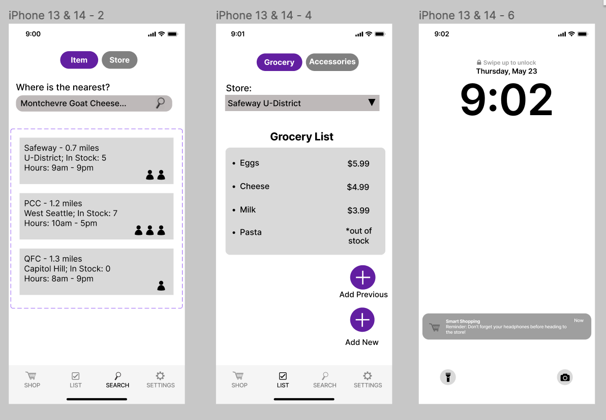
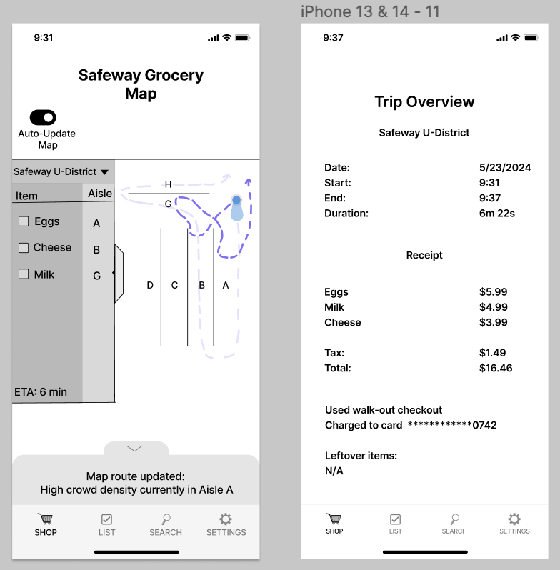

Smart Shopper
Team
Problem and Design Overview
Navigating crowded grocery stores is especially challenging for individuals with neurodiversities such as autism, anxiety, ADHD, and sensory sensitivities. The overwhelming sensory environment—bright lights, constant announcements, and densely packed aisles and checkouts—can create significant barriers to shopping comfortably. Consider the experience of shopping at a busy grocery store like the U-District Trader Joe's during rush hour, where maneuvering a cart through the crowds becomes almost impossible. Additionally, the common struggle of not finding needed items compounds the stress. This broad spectrum of challenges underscores the need for a more accessible and manageable grocery shopping environment for all, ensuring no one has to endure unnecessary stress while obtaining everyday necessities.
A crowded, overwhelming grocery store
Design Research Process and Key Insights
Design Research Process
The goal of our design research was to gain information on specifically our audience and those who’ve already worked on solutions to accommodate our audience. This would allow us to make decisions on how we would move forward with our design as we had information to see things that have worked/not worked and what is still needed/wanted from our audience. We first conducted a contextual inquiry with customers at a PCC store during its quiet hours. During this time, we observed people who shopped during these hours (8-9am) and also the changes in the stores (dimmer lights, no music, no in-store calls or loud machines, and quiet restocking). Our reasoning for this research method was to observe things that worked/didn’t worked with this solution that the store had implemented and how the shoppers interacted in this environment. Secondly, we interviewed the PCC staff, managers, and co-store director. This allowed us to gain better information on the specifics of what quiet hours were and the features it offered. Our reasoning for this method was similar to the first, but also to gain better insight from the experts. Lastly, we conducted a focus group with a diverse group of UW students (some who identified as neurodivergent, experienced stress during shopping, etc.) The reasoning for this research method was to learn about our audience’s experiences when shopping, their concerns when shopping, and the kinds of solutions they would like in the future. We also pitched some of our group’s ideas, solutions, and designed and received feedback from them.
3 Key Insights
-
Simplifying Item Location
Finding specific items in a grocery store was repeatedly mentioned as a major stressor. During our focus group, participants expressed frustration with not being able to locate items quickly, leading to extended shopping trips and increased anxiety. One participant mentioned, "I get frustrated when I can't find items quickly; several times I just left the store with an incomplete shopping list." This feedback informed our decision to include detailed inventory maps and an efficient route planner in the app, ensuring users can find their items with minimal hassle.
-
Locating Specific Favorite Items
Another key insight was the frustration of not being able to find specific favorite items, which often led to multiple trips to different stores. Participants expressed that they cared about specific brands or types of products and were frequently disappointed when these items were unavailable. One participant noted, "I want to know which stores have my specific Middle Eastern sauce since it's often hard to find and out of stock." Another added, "It's frustrating to go to multiple stores looking for one specific item." This insight drove us to implement a feature in our app that allows users to search for specific items and check their availability across different stores, reducing unnecessary trips and ensuring a successful shopping experience.
-
Prioritizing Noise Management
Our focus group highlighted the crucial need for noise management in grocery stores. Many participants said noise-canceling headphones are essential for a comfortable shopping experience. This insight first emerged from our contextual inquiry during PCC's quiet hours and was reinforced by focus group feedback. One participant shared, "I always wear noise-canceling headphones; they help me stay calm and in my own world." All six participants regularly used these headphones. We integrated an accessory list in our app to remind users to bring their headphones. Additionally, we added an ADHD-friendly feature: an accessories checklist connected with a reminder system for forgotten items.
Iterative Design Process and Key Insights
Iterative Research Process
Our first task that we decided to focus on was “Efficiently locating all required items in a stress-free/less crowded manner.” This task would focus more on the actual shopping experience of our audience. For example, when an individual goes shopping, our app would provide them with the most efficient route within the store to locate all items while taking into account crowded areas in the store. Our second task was “Preparing/organizing for a grocery trip.” This task would focus on the preparation side of grocery shopping like locating the nearest store that carries a specific product, making shopping lists, or reminders for bringing accessories with them to shop. When making our paper prototype, we were able to implement our idea by separating our app into two “modes.” We had a shop mode and a prepare mode, with the two modes having functionality like the examples listed with our tasks. During the testing period, we noticed that participants were getting a little bit confused with navigating the application due to some ambiguity of features and buttons. Some of these things didn’t have explicit explanations or labels making it confusing for users to interact with. Another thing we observed was some things felt cluttered or crowded to fit onto the screen making it overwhelming for users. To fix these issues, we added a nav-bar and different tabs within screens to better organize our application, making it less overwhelming for the users, added labels to buttons, or took out some features that seemed pointless.
Storyboard created after design research
3 Key Insights
-
Dynamic Rerouting Notification on Map
We redesigned the dynamic rerouting feature in the map view of the grocery shopping app to enhance user navigation. Instead of a standard pop-up notification, the app now uses a subtle slide-up panel from the bottom of the screen. This panel provides real-time updates on why the user's path has been rerouted, such as high crowd density in a specific aisle. This design change is more integrated and less intrusive, guiding the user through the shopping experience smoothly while keeping them informed without disrupting their focus.

-
Home Screen with Prepare and Shop Buttons
We decided to keep a home screen that will prominently display our logo and feature two main buttons: "Prepare" and "Shop." Even though the navigation bar allows access to any screen, this home screen serves as a starting point to guide users through the app. This decision was made to prevent users from feeling overwhelmed and to provide a clear route through the app. Users click "Prepare" first to create a list at home, which is necessary for generating the shortest path map. Then, they click "Shop" when they are at the store. This flow is intuitive and helps users understand the sequence of actions, making the app faster and easier to use. Our home screen also proudly displays our tutorial button.

-
Drop-Down Menu for Multiple Grocery Lists
To accommodate users who shop at multiple stores or who may need to manage several lists simultaneously, we integrated a drop-down menu feature. This menu allows users to quickly switch between different grocery lists for various stores without navigating away from the current screen. Additionally, if users do not get all their items at a store, the list will stay open, ensuring they can complete their shopping later. We also added a "Past Trips" option, enabling users to recall and reuse previous lists without having to add everything again. These enhancements were driven by the need to make the app more user-friendly and efficient, enabling shoppers to manage multiple lists in a streamlined manner.

Resulting Design
Overview of Digital Mockup:
Smart Shopper offers a dual solution with inventory maps, efficient navigation, real-time crowd updates, item search, and personalized lists. Our smart space features crowd detection cameras and checkout-free technology for stress-free shopping. Our smart app involves two main pathways: "PREPARE" and "SHOP." The "PREPARE" feature addresses the task of efficiently planning and organizing the grocery visit. The "SHOP" feature is designed to help one efficiently find all required items with minimal stress and avoid crowded areas.
The user is planning a grocery trip, so they open the Smart Shopper app and start by selecting "PREPARE." The nav bar below includes options to switch to different frames. The app offers a feature under the “Item” tab to search for specific favorite items and find the nearest store that stocks them. The number of people icons next to each store show how crowded the store is. There is also a “Store” tab where you can search for a specific store by name or location. The user can create a grocery list for each selected store with a “grocery” tab and an “accessory” tab. The app ensures that only in-stock items at the chosen store can be added, providing a starred out note if an item isn't available. The “accessory” tab allows the user to add their sunglasses, headphones, or reusable bags etc. as things to remember to bring. There is a triangle next to the title of the store so the user can navigate between different lists dedicated to different stores. Before the user leaves the house, a pop-up alerts them that they forgot headphones, helping them better organize his trip.
At the store, the user taps "SHOP" and is guided through their shopping list. The app converts their list into the shortest route to collect all items, optimizing for efficiency and reducing stress. There is a toggle button at the top of the map allowing them to toggle enabling rerouting on the map based on crowds. Cameras installed throughout the store detect crowded aisles and reroute the user automatically, with a redesigned pop up notifying him of the new route. The rerouting feature can be toggled on or off based on personal preference. Once the user finishes shopping, they can either walk out directly if they're logged into the app which is connected to the smart store system or use in-person checkouts. There is a slide up notification notifying them of the same. The user can see a summary of his shopping visit, including the total cost, the time they spent and the average time they saved. They can also see items leftover from his list.

Sources:
Polaroid CSS Styling: https://codesandbox.io/p/sandbox/polaroid-picture-vgp53?file=%2Fcss%2Fstyles.css%3A41%2C2
Problem Overview Image 1: https://www.ecosia.org/images?addon=chrome&addonversion=6.0.2&q=busy+aisle+in+grocery+store+clipart#id=90D220F4B163F160FBF9A6127247A84439C06788
Image Background Styling: MUI CSS Styling